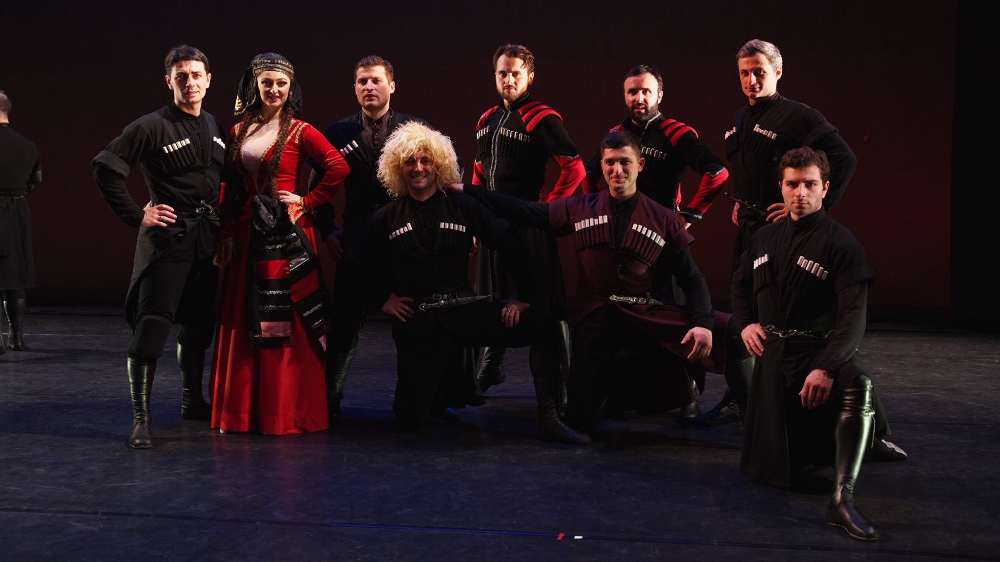

2. Розова Долина (The Rose Valley)
Just south of the Balkan mountains lies the Rose Valley, a place where roses are grown and harvested by hand by local women. Rose oil production is one of the trademarks of Bulgaria.
Dancing Crane is an ensemble of professional dancers who have performed since their childhood in the country of Georgia. It was founded by Victor Sirelson, a researcher of ethnic dance and music. He became involved with the study of Georgian dance and formed a collaboration with Merab Tsereteli, a dancer with the Sukhishvili Ensemble in Georgia.
Dancing Crane's performances present a program of the regional dances of Georgia in various regional costumes. They represent the oldest Georgian cultural center and repertory theater company in New York. They offer master classes in traditional Georgian dance, music, and theater for students of all ages, and raise awareness of these traditions through world-class performances throughout the five boroughs of New York. They address the needs of a growing Georgian immigrant community, offering educational programs for families and children, and providing a space for professional artists to practice and elevate their work.
Find out more about their dance, music, theater and youth programs at dancingcrane.org
This song and dance portray the beauty of the three girls whose hearts bring beauty to the village.
Dancer: Nadia Petkova
Song by: Nevena Tsoneva

Just south of the Balkan mountains lies the Rose Valley, a place where roses are grown and harvested by hand by local women. Rose oil production is one of the trademarks of Bulgaria.
A female dance connected with spring rituals and traditionally danced on Еньовден (Enyov Day / St. John's Eve). The wreaths are made from flowers and herbs believed to have a healing power.
A Georgian song by Sofiko Alania.
A Georgian dance by Dancing Crane.
A Georgian dance by Dancing Crane.
A dance from central northern Bulgaria.
A dance from Bulgaria's Danube (northern) region, referencing the Danube river that runs along the border with Romania.
A Georgian song by Sofiko Alania.
A Georgian dance by Dancing Crane.
A Georgian dance by Dancing Crane.
A dance from the town of Yambol in Bulgaria's Thracian region.
A dance from the Shopski region in western Bulgaria.
A dance from the Rodopi mountains in central southern Bulgaria.
A Georgian dance by Dancing Crane.
A Georgian dance by Dancing Crane.
A ritualistic dance from western Bulgaria. The rose flowers in the dance are intended to be given to the women's love interest.
A dance from the Rose Valley in central Bulgaria.
A dance from Sadovo, a village in central southern Bulgaria close to Plovdiv. "Krivo" translates to "crooked".
A Georgian dance by Dancing Crane.
A Georgian song by Sofiko Alania.
A Georgian dance by Dancing Crane.
A dance from the Shopski region in western Bulgaria.
A dance from the Shopski region in western Bulgaria.
A dance from the Shopski region in western Bulgaria.
Template adapted from
HTML5 Up under the
Creative Commons Attribution 3.0 License